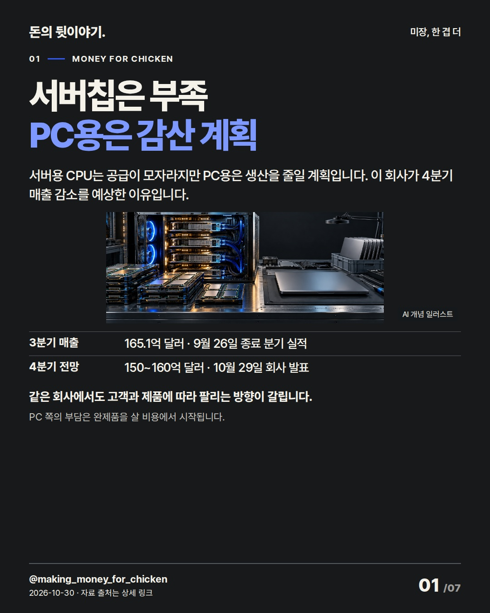
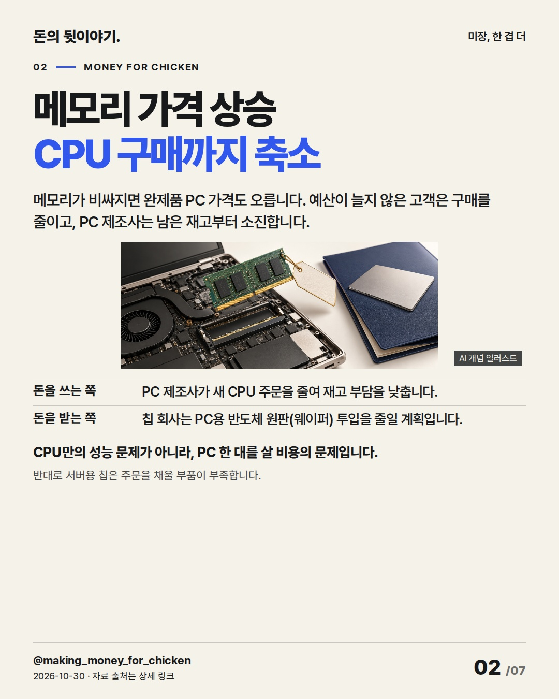
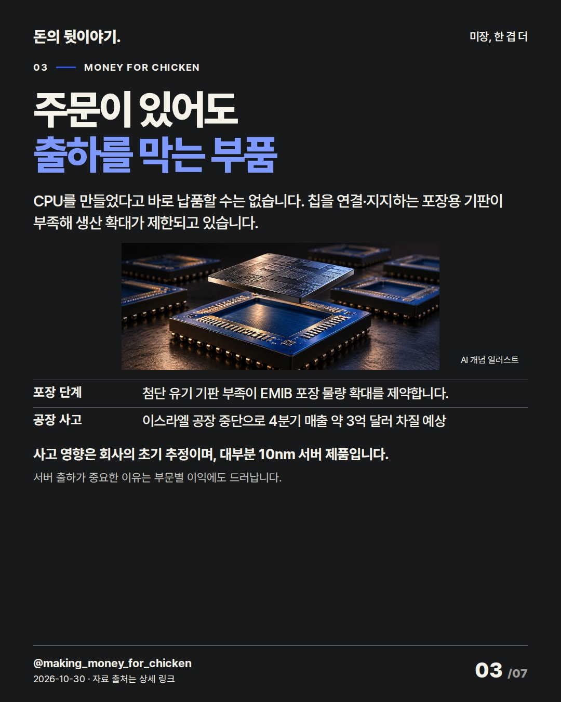
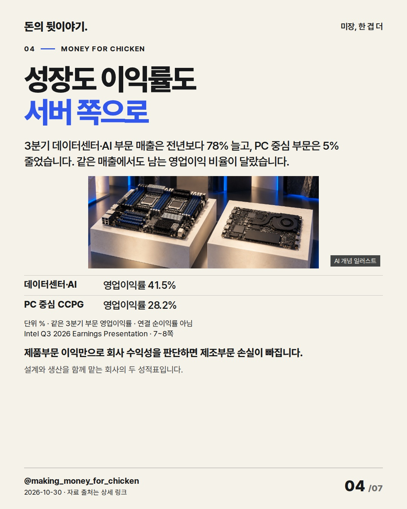
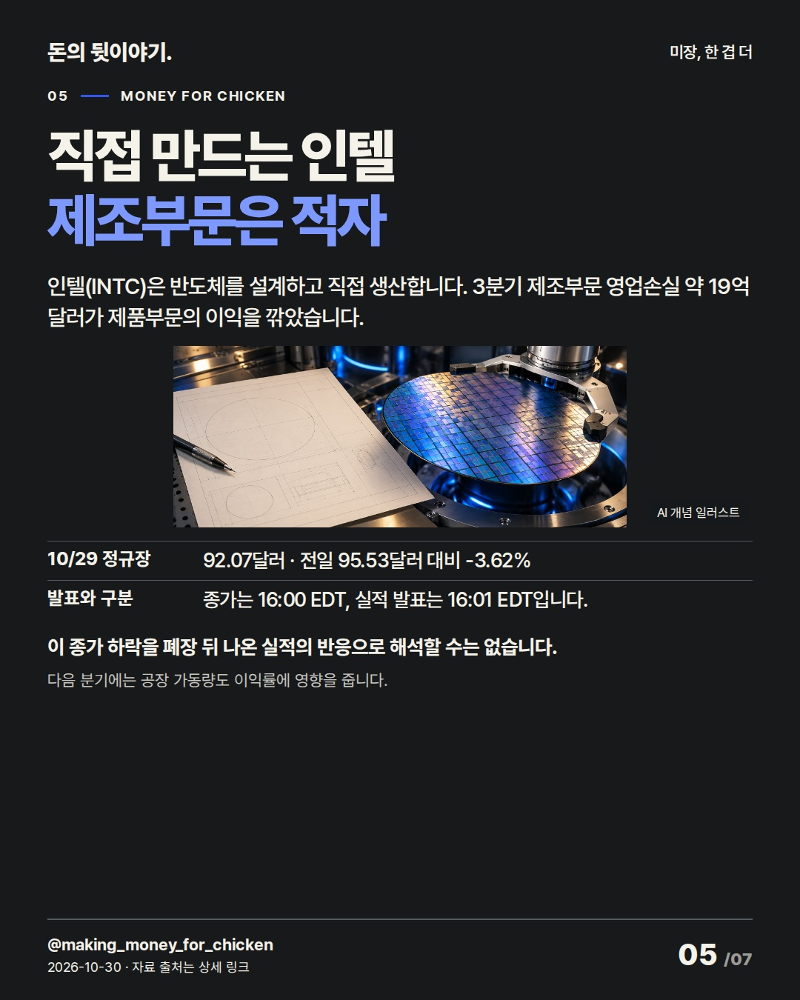
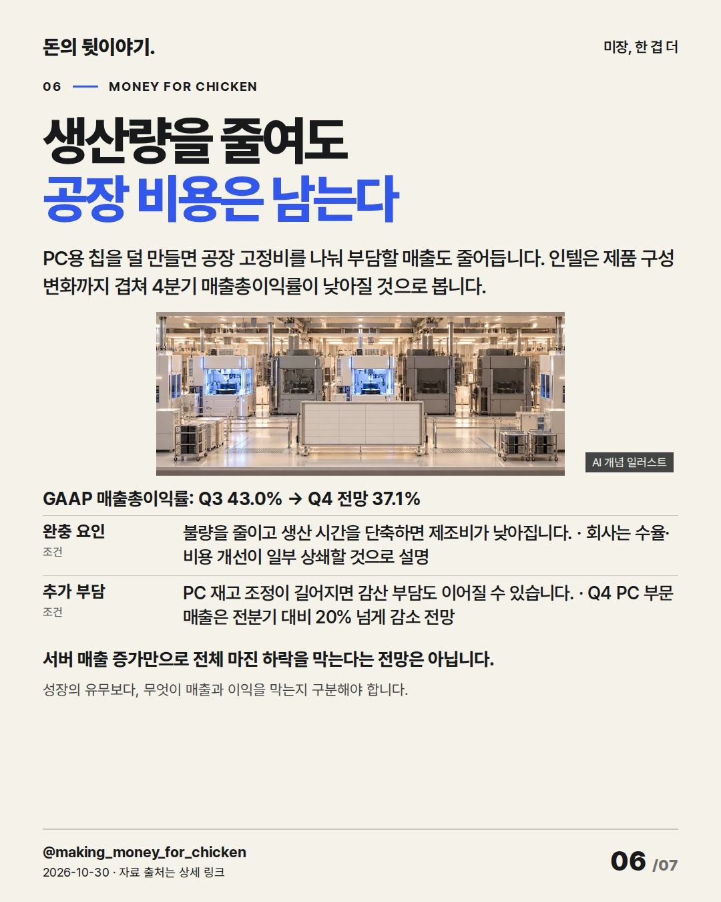
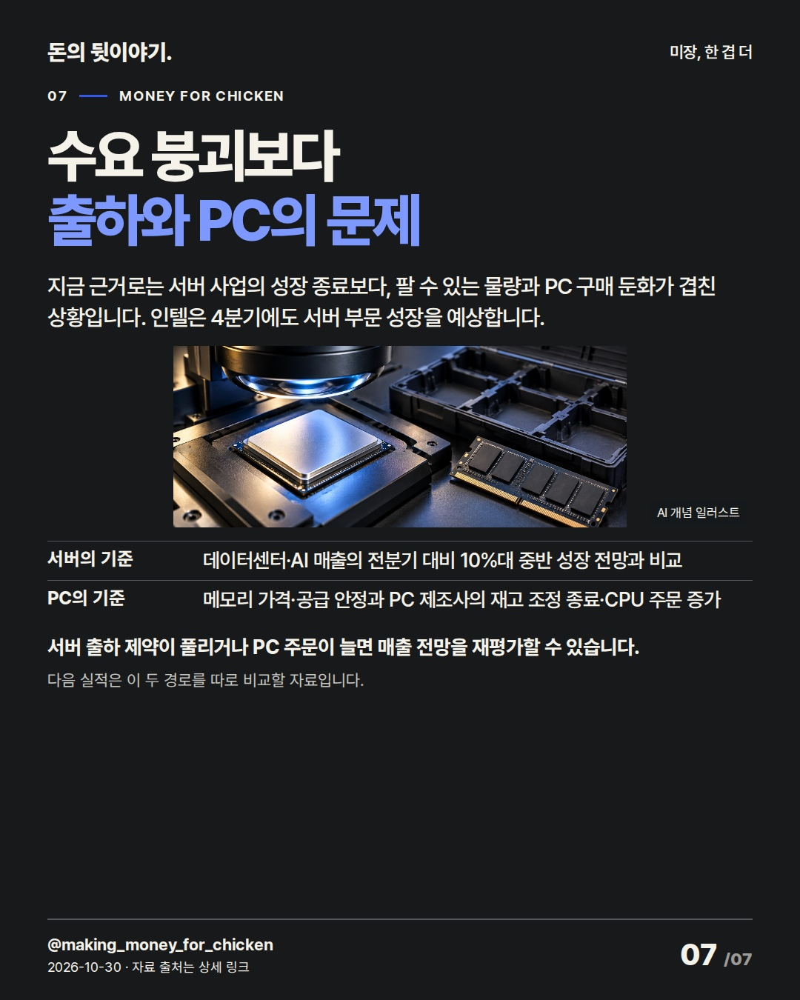

서버용 칩은 부족한데, PC용은 생산을 줄일 계획입니다. 고객이 덜 사는 문제와 주문을 제때 못 채우는 문제를 나누면 다음 분기 전망이 읽힙니다. 인텔(INTC) #미국주식 #인텔 #반도체

서버용 CPU는 공급이 모자라지만 PC용은 생산을 줄일 계획입니다. 이 회사가 4분기 매출 감소를 예상한 이유입니다.
같은 회사에서도 고객과 제품에 따라 팔리는 방향이 갈립니다. PC 쪽의 부담은 완제품을 살 비용에서 시작됩니다.
AI 생성 개념 일러스트 · 실제 현장이나 공식 제품 사진이 아닙니다.
메모리가 비싸지면 완제품 PC 가격도 오릅니다. 예산이 늘지 않은 고객은 구매를 줄이고, PC 제조사는 남은 재고부터 소진합니다.
CPU만의 성능 문제가 아니라, PC 한 대를 살 비용의 문제입니다. 반대로 서버용 칩은 주문을 채울 부품이 부족합니다.
AI 생성 개념 일러스트 · 실제 현장이나 공식 제품 사진이 아닙니다.
CPU를 만들었다고 바로 납품할 수는 없습니다. 칩을 연결·지지하는 포장용 기판이 부족해 생산 확대가 제한되고 있습니다.
사고 영향은 회사의 초기 추정이며, 대부분 10nm 서버 제품입니다. 서버 출하가 중요한 이유는 부문별 이익에도 드러납니다.
AI 생성 개념 일러스트 · 실제 현장이나 공식 제품 사진이 아닙니다.
3분기 데이터센터·AI 부문 매출은 전년보다 78% 늘고, PC 중심 부문은 5% 줄었습니다. 같은 매출에서도 남는 영업이익 비율이 달랐습니다.
제품부문 이익만으로 회사 수익성을 판단하면 제조부문 손실이 빠집니다. 설계와 생산을 함께 맡는 회사의 두 성적표입니다. % · Intel Q3 2026 Earnings Presentation · 7~8쪽 · 같은 3분기 부문 영업이익률 · 연결 순이익률 아님
AI 생성 개념 일러스트 · 실제 현장이나 공식 제품 사진이 아닙니다.
인텔(INTC)은 반도체를 설계하고 직접 생산합니다. 3분기 제조부문 영업손실 약 19억 달러가 제품부문의 이익을 깎았습니다.
이 종가 하락을 폐장 뒤 나온 실적의 반응으로 해석할 수는 없습니다. 다음 분기에는 공장 가동량도 이익률에 영향을 줍니다.
AI 생성 개념 일러스트 · 실제 현장이나 공식 제품 사진이 아닙니다.
PC용 칩을 덜 만들면 공장 고정비를 나눠 부담할 매출도 줄어듭니다. 인텔은 제품 구성 변화까지 겹쳐 4분기 매출총이익률이 낮아질 것으로 봅니다.
서버 매출 증가만으로 전체 마진 하락을 막는다는 전망은 아닙니다. 성장의 유무보다, 무엇이 매출과 이익을 막는지 구분해야 합니다. GAAP 매출총이익률: Q3 43.0% → Q4 전망 37.1%
AI 생성 개념 일러스트 · 실제 현장이나 공식 제품 사진이 아닙니다.
지금 근거로는 서버 사업의 성장 종료보다, 팔 수 있는 물량과 PC 구매 둔화가 겹친 상황입니다. 인텔은 4분기에도 서버 부문 성장을 예상합니다.
서버 출하 제약이 풀리거나 PC 주문이 늘면 매출 전망을 재평가할 수 있습니다. 다음 실적은 이 두 경로를 따로 비교할 자료입니다.
AI 생성 개념 일러스트 · 실제 현장이나 공식 제품 사진이 아닙니다.{
"improvement": "최근 5편(MSFT·SK하이닉스·BE·이란 해운·한은)의 원고·25장 실제 카드와 review를 비교. 직전 MSFT의 다음 과제인 부문 이익률 설명을 이어받아, 이번 개선은 고객의 구매→부문 이익→공장 비용의 연결. 1장 발견은 서버 부족과 PC 감산의 공존, 기업명은 5장 공개(4장 필수 출처 Intel은 보존). 반응 지표는 미확보.",
"reason": "불스토리(국내 브랜드) 「99% 투자자가 Intel 을 잘못 투자하고 있습니다.」 공식 사이트 본문 전체: 제품 수요만 보고 제조 비용을 빠뜨리는 질문 구성 참고. 홍춘욱 「반도체 호황인데 왜 고용은 얼어붙었을까?」(frism.io, 10/29) 공식 인터뷰 전사 전체: 총량 대신 부문별 전달 경로 참고. Instagram 카드·영상은 미열람; 비교 글의 투자 결론·수치·고유 문구는 미사용.",
"application": "2장 초안 ‘PC 수요 둔화로 실적 부담’→‘메모리가 비싸지면 완제품 PC 가격도 오릅니다. 예산이 늘지 않은 고객은 구매를 줄이고, PC 제조사는 남은 재고부터 소진합니다.’ 4장은 동일 분기 영업이익률, 6장은 감산→고정비 설명 보강. 제목 후보 서버 부족/AI 붕괴/공장 비용 중 첫째 선택; DCAI 성장 전망이 AI 붕괴를 반박해 탈락. 정상 preview 7장·모바일 전체를 본 뒤 2장 웨이퍼 풀이, 7장 DCAI 한글화·재고 조정 종료 조건을 명확히 하고 새 preview로 재검수.",
"avoided_repetition": "‘성장 입증·회복 관건’과 4장 하단 제조손실 반복을 덜고 3장 공급 부품, 5장 제조 손실, 7장 판단 기준으로 분리. 현금·순이익 조정은 MSFT·BE와 겹쳐 제외; 무관한 인수·한국 수혜주·목표가도 제외. 회사의 사고 영향은 초기 추정, 종가는 발표 전으로 분리. 다음 편은 제품 이름보다 구매자가 비용을 줄이는 선택부터 설명."
}투자 참고용 · 매수·매도 권유 아님.